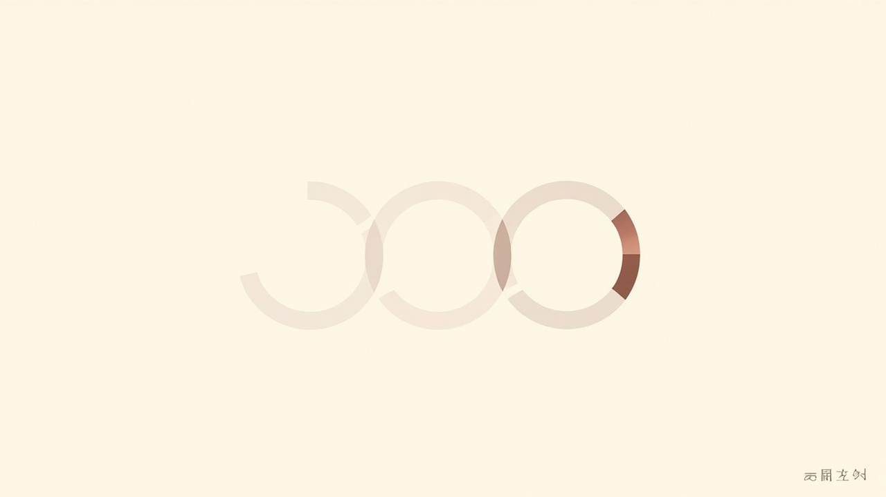
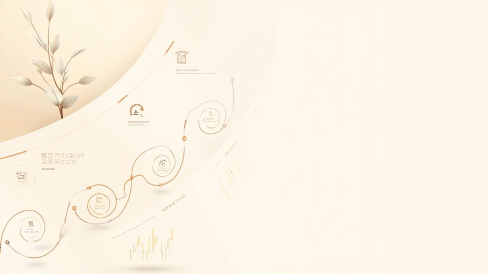
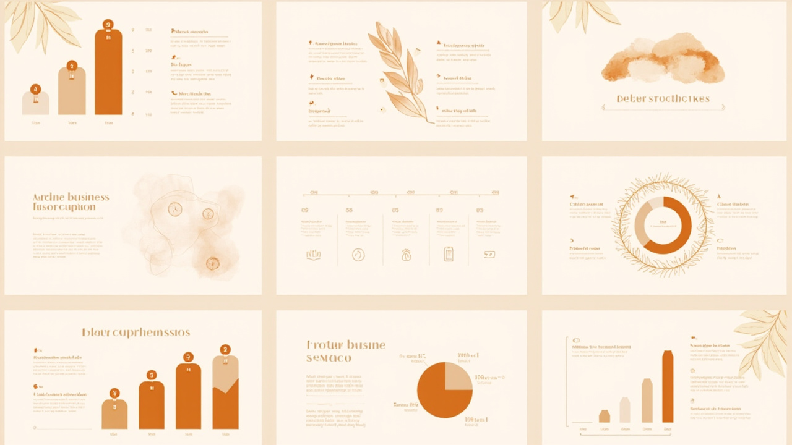
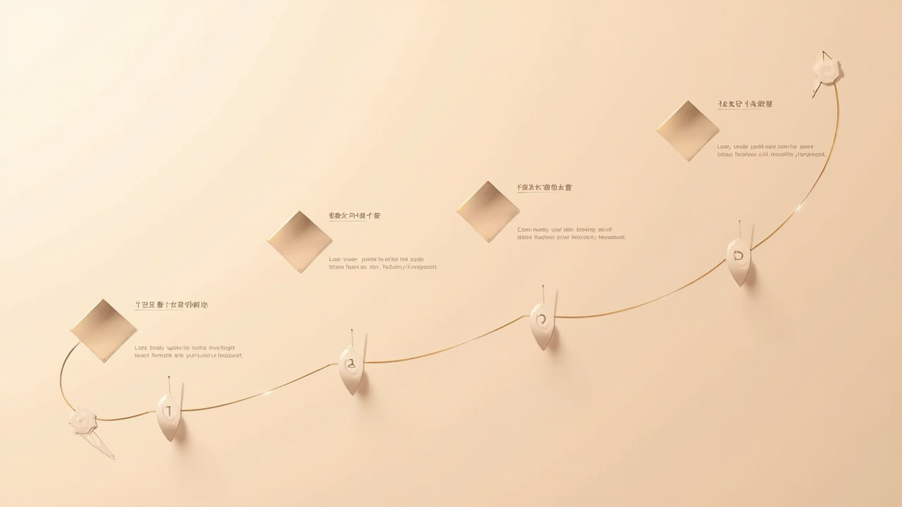
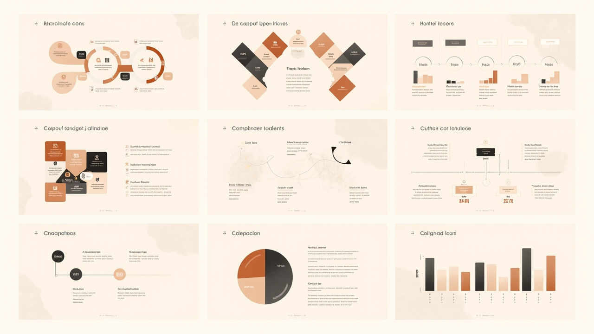
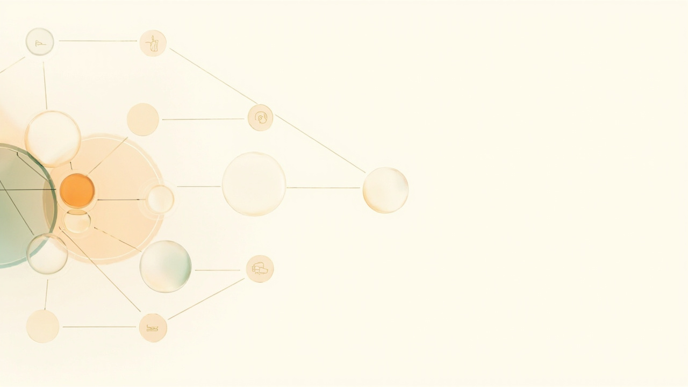
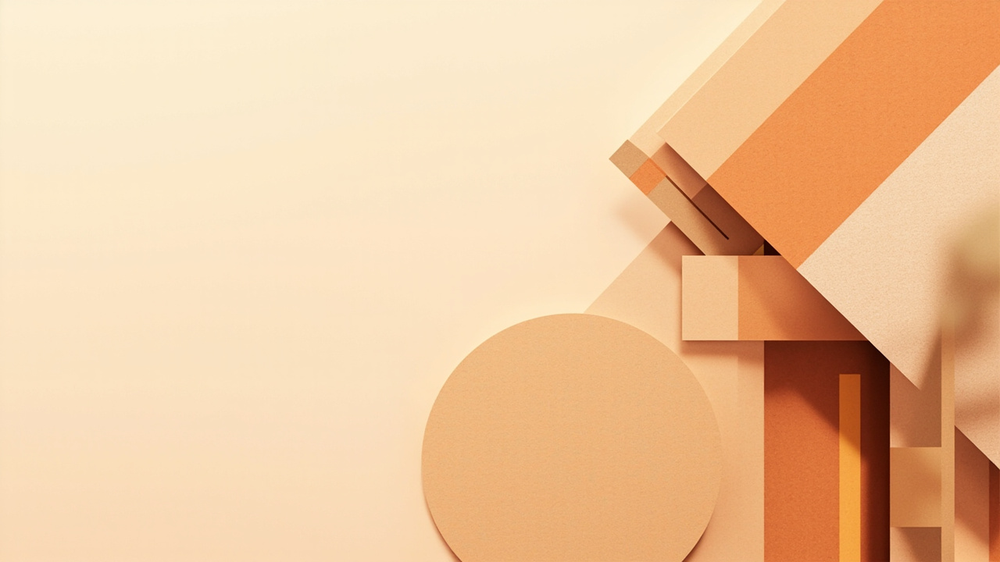

Modern • Minimalist • Business Style







70% 以上留白才能傳達高級感，讓主體有呼吸空間
大地暖色系：米白 #FFF8F0、深棕 #7F4F24、陶土玫瑰 #A26769
圓形 Line Icon 系統，極簡細線風格，統一視覺
非方塊化，用曲線串聯圓形節點，避免死板
非對稱平衡、Z型視線引導、黃金比例構圖
2D 優先，避免 3D（嚴謹數據場合），靠明度差區分層級